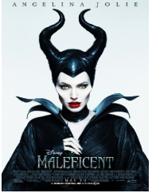
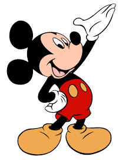
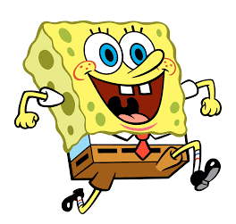

Using Shape: using basic shapes to sketch a character and what certain shapes mean(This may not be true for every cartoon, but it is commonly used.)
Triangles are often used to create villains. When you think of common bad guys, you will probably realize that they are composed of sharper features. The triangle is usually the base for those sharp edges. Think of the Illuminati. It’s seen as evil and it’s symbol is literally a TRIANGLE!
Circles are usually used when making the "good guy" Circles typically make up the happy characters. They are often used in designing animals. Recall a cartoon regarding a small animal. What does the body look like it is made up of? It should be a CIRCLE or a circular shape at least.
Squares make up the silly or dumb characters. This one is easy. Let’s think of one famous, yellow, SQUARE character. He isn’t the most mature, is he? Ever heard the phrase “Don’t be a square” ? This should help you remember how to use squares when designing your characters.
